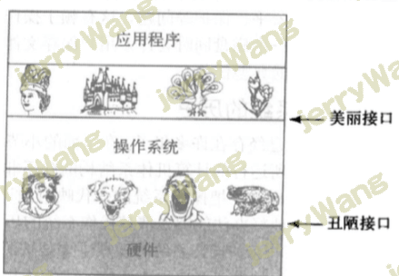
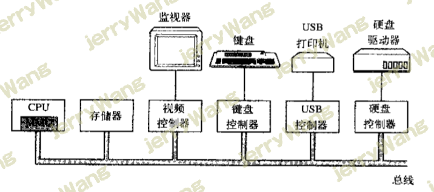
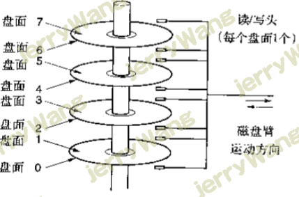
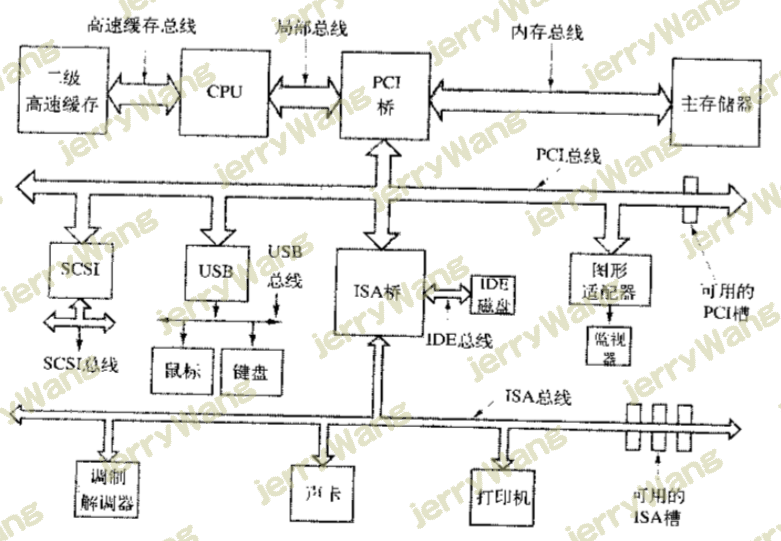

计算机基础知识
一、为何要学习计算机基础？
好多人觉得自己有点基础就都想着直接敲代码，觉得基础知识很容易，很简单，就不怎么用心去学。然而，我觉得基础知识很重要。就像盖一栋楼房一样，你先要打好地基，再去盖房。
Python是一门编程语言，即通俗一点说就是语言。
我们都知道世界上有很多种语言，比如：汉语，英语，阿拉伯语等等众多的语言。要想用这些语言去和人沟通，如果你想和英国人说话，你必须得会英语吧。而我们的计算机也有它自己的语言，你要想让计算机帮助我们做事情，你就需要和它沟通吧。那你就得懂得计算机语言吧，也就是编程。当然计算机也有很多语言，比如：C，Java，PHP，Python，C#等。所以我们就先从学习基础知识开始。也有人说学习基础理论知识很枯燥，但是，那还是得学。你要把它当成自己的兴趣，一点一点的去投入它，相信你会是很棒的。
程序用编程语言来写程序，最终开发的结果就是一个软件。就像大家都知道的QQ，腾讯视频，酷狗音乐等一系列软件。这些软件要想运行必须得有系统控制它吧。当然，有人会问：为什么要用操作系统呢？当然，很久以前的那些程序员确实是在没有操作环境下，编程语言是操作硬件来编写的。你可能觉得没问题，但是其实问题很严重。如果一直像以前那样会严重影响效率的。操作系统是出现在硬件之上的，是用来控制硬件的。所以，我们开发时只需要调用操作系统为我们提供的简单的接口就可以了。

如上图所示，我把计算机的系统分为了上面三大块。硬件，操作系统，应用程序。要想学习软件知识，我想那些硬件的知识或多或少还是得了解点的，现在我们就来谈谈硬件一类的知识。
二、计算机硬件介绍
\1. 硬件的目的：为了运行软件给它的一些指令。我们可以优先从硬件中提取出这三个主要的东西，分别是： CPU，内存，硬盘
\2. 在现实生活中，人脑是用来计算的，在计算机中，用来计算的是什么呢？当然是CPU了。多数CPU都有两种模式，即内核态与用户态。这里的即内核态与用户态将会在下面的内容中讲到。
3.如果我们把计算机理解为人的大脑，我们可以总结为几句话：
**CPU是人的大脑，负责运算**
内存是人的记忆，负责临时存储
硬盘是人的笔记本，负责永久存储
输入设备是人的耳朵或眼睛，负责接受外部的信息传给CPU
以上所有的设备都通过总线连接，总线相当于人的神经

总线示意图
三、处理器（寄存器及内核态与用户态切换）
1.计算机的大脑是CPU，它从内存中取指令-▶解码-▶执行，然后在取指令，解码，执行，周而复始，直至整个程序被执行完成。
2. 寄存器是一个存储设备，最快的一种存储设备就是寄存器。
3.寄存器的分类
①通用寄存器：用来保存变量和临时结果的。
②程序计数器：它保存了将要取出的下一条指令的内存地址。在指令取出后，程序计算器就被更新以便执行后期的指令
③堆栈指针：它指向内存中当前栈的顶端。该栈包含已经进入但是还没有退出的每个过程中的一个框架。在一个过程的堆栈框架中保存了有关的输入参数、局部变量以及那些没有保存在寄存器中的临时变量
④程序状态字寄存器（Program Status Word,简称PSW）：这个寄存器包含了条码位(由比较指令设置)、CPU优先级、模式（用户态或内核态），以及各种其他控制位。用户通常读入整个PSW，但是只对其中少量的字段写入。在系统调用和I/O中，PSW非常重要。
4.内核态与用户态
多数CPU都有两种模式，即内核态与用户态。
①当cpu处于内核状态时，运行的是操作系统，能控制硬件（可以获取所有cpu的指令集）
②当cpu处于用户太状态时，运行的是用户软件，不能控制硬件（可以获取所有cpu的指令集中的一个子集，该子集不包括操作硬件的指令集）
这里有些人可能会含糊什么是内核态，什么是用户态？下面我来解释一下：
内核态:当cpu在内核态运行时，cpu可以执行指令集中所有的指令，很明显，所有的指令中包含了使用硬件的所有功能，（操作系统在内核态下运行，从而可以访问整个硬件）所以，归根结底通俗一点的话也就是上面①解释的那样
用户态:用户程序在用户态下运行，仅仅只能执行cpu整个指令集的一个子集，该子集中不包含操作硬件功能的部分，因此，一般情况下，在用户态中有关I/O和内存保护（操作系统占用的内存是受保护的，不能被别的程序占用），当然，在用户态下，将PSW中的模式设置成内核态也是禁止的。
5.内核态与用户态切换
用户态下工作的软件是不能之间操作硬件的，但是像我们的一些软件，比如暴风音影啊一类的软件，我们要想从磁盘中读取一个电影文件，那就得从用户态切换成内核态，为此，用户程序必须使用系统调用（system call），系统调用陷入内核并调用操作系统，TRAP指令把用户态切换成内核态，并启用操作系统从而获得服务。
四、存储器系列，L1缓存，L2缓存，内存（RAM），EEPROM和闪存，CMOS与BIOS电池
\1. 计算机中第二重要的就是存储了，所有人都意淫着存储：速度快（这样cpu的等待存储器的延迟就降低了）+容量大+价钱便宜。然后同时兼备三者是不可能的，所以有了如下的不同的处理方式

由上图可以很清楚的看见寄存器存储是速度非常快的，但是它的容量却很少。下来就是高速缓存了。我就不一一介绍了，我相信大家应该可以看得懂这个图。
2.寄存器即L1缓存：用与cpu相同材质制造，与cpu一样快，因而cpu访问它无时延，典型容量是：在32位cpu中为3232，在64位cpu中为6464，在两种情况下容量均<1KB。
3.高速缓存即L2缓存：主要由硬件控制高速缓存的存取，内存中有高速缓存行按照0~64字节为行0，64~127为行1。。。最常用的高速缓存行放置在cpu内部或者非常接近cpu的高速缓存中。当某个程序需要读一个存储字时，高速缓存硬件检查所需要的高速缓存行是否在高速缓存中。
4.内存：主存通常称为随机访问存储RAM，就是我们通常所说的内存，容量一直在不断攀升，所有不能再高速缓存中找到的，都会到主存中找，主存是易失性存储，断电后数据全部消失
5.EEPROM（Electrically Erasable PROM，电可擦除可编程ROM）和闪存（flash memory）也是非易失性的。还有一类存储器就是CMOS，它是易失性的，许多计算机利用CMOS存储器来保持当前时间和日期。CMOS存储器和递增时间的电路由一小块电池驱动，所以，即使计算机没有加电，时间也仍然可以正确地更新，除此之外CMOS还可以保存配置的参数，比如，哪一个是启动磁盘等，之所以采用CMOS是因为它耗电非常少，一块工厂原装电池往往能使用若干年，但是当电池失效时，相关的配置和时间等都将丢失。
五、磁盘
1.磁盘由磁头，磁道，扇区组成的。
2.磁道：每个磁头可以读取一段换新区域。把一个戈丁手臂位置上所以的磁道合起来，组成一个柱面
3.每个磁道划成若干扇区，扇区典型的值是512字节。
4.数据都存放于一段一段的扇区，即磁道这个圆圈的一小段圆圈，从磁盘读取一段数据需要经历寻道时间和延迟时间，那么什么是寻道时间和延迟时间呢？
平均寻道时间：机械手臂从一个柱面随机移动到相邻的柱面的时间成为寻到时间，找到了磁道就以为着招到了数据所在的那个圈圈，但是还不知道数据具体这个圆圈的具体位置
平均延迟时间：机械臂到达正确的磁道之后还必须等待旋转到数据所在的扇区下，这段时间成为延迟时间

六、磁带
1.有些人会想磁带是用来干什么的呢？当然，它也是内存之一，是用来存储东西的，它的存储量是相当大的，而且价钱也便宜。当遇上火灾等紧急情况时，可以用磁带来存储我们的重要文件。常常用来做备份（常见于大型数据库系统中）。但是，它也有缺点，就是运行速度特别慢，效率低。
2.cpu和存储器并不是操作系统唯一需要管理的资源，I/O设备也是非常重要的一环。I/O设备一般包括两个部分：设备控制器和设备本身。
控制器的功能：通常情况下对设备的控制是非常复杂和具体的，控制器的任务就是为操作系统屏蔽这些复杂而具体的工作，提供给操作系统一个简单而清晰的接口
设备本身：有相对简单的接口且标准的，这样大家都可以为其编写驱动程序了。要想调用设备，必须根据该接口编写复杂而具体的程序，于是有了控制器提供设备驱动接口给操作系统。必须把设备驱动程序安装到操作系统中。
七、总线
北桥即PCI桥：连接高速设备
南桥即ISA桥：连接慢速设备

八、操作系统的启动流程
1.计算机加电
2.BIOS开始运行，检测硬件：cpu、内存、硬盘等
3.BIOS读取CMOS存储器中的参数，选择启动设备
4.从启动设备上读取第一个扇区的内容（MBR主引导记录512字节，前446为引导信息，后64为分区信息，最后两个为标志位）
5.根据分区信息读入bootloader启动装载模块，启动操作系统
6.然后操作系统询问BIOS，以获得配置信息。对于每种设备，系统会检查其设备驱动程序是否存在，如果没有，系统则会要求用户按照设备驱动程序。一旦有了全部的设备驱动程序，操作系统就将它们调入内核。然后初始有关的表格（如进程表），穿件需要的进程，并在每个终端上启动登录程序或GUI
九、应用程序的启动流程
1.双击快捷方式
2.告诉操作系统一个文件路径
3.操作系统从硬盘读取文件到内存中
4.cpu从内存中读取数据执行
 微信
微信 支付宝
支付宝